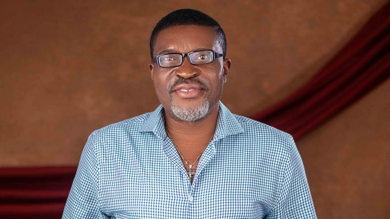

Kanayo O. Kanayo

Kanayo O.Kanayo(Nollywood Actor)
Amazing facts about Kanayo O. Kanayo
- He isa Veteran Nigerian actor, movie producer, Lawyer and a Philathropist from Imo state
- He was born on March, 1st, 1962, in Mbaise, Imo sate.
- He is also a multiple award winning actor has both a bachelors degree in philosophy and a masters degree in political science from Unilag, Akoka.
- Kanayo O Kanayo later proceeded to the University of Abuja to study Law.
- He satrted his acting career in 1982, featuring in the popular NTA series titled 'New Masquerade',. He was cast alongside
Chike okpala(Chief Zebrudaya), Lizzy Evoeme(Ovuleria) e.t.c
"It takes Sacrifice to be a Man, Just do it"
-- Kanayo O. Kanayo